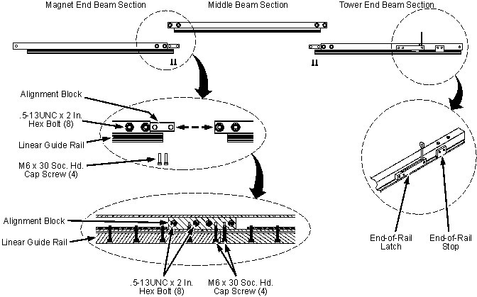
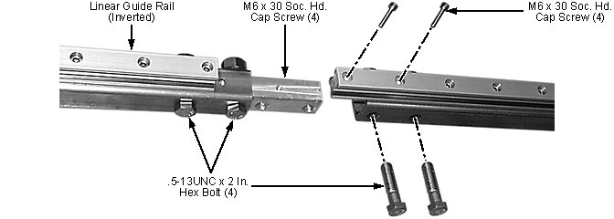

| NOTE: | Make sure the fasteners are tight, including all of the M6 x 25 mm socket-head cap screws used to secure the Guide Rail to the Beam's square tubing. Any loose bolts/cap screws can allow the Beam to sag sufficiently to impede passage of the Guide Rail Cassette. |
Illustration 17: Coldhead Transport Tool's Beam

Illustration 18: Connecting Beam Sections
